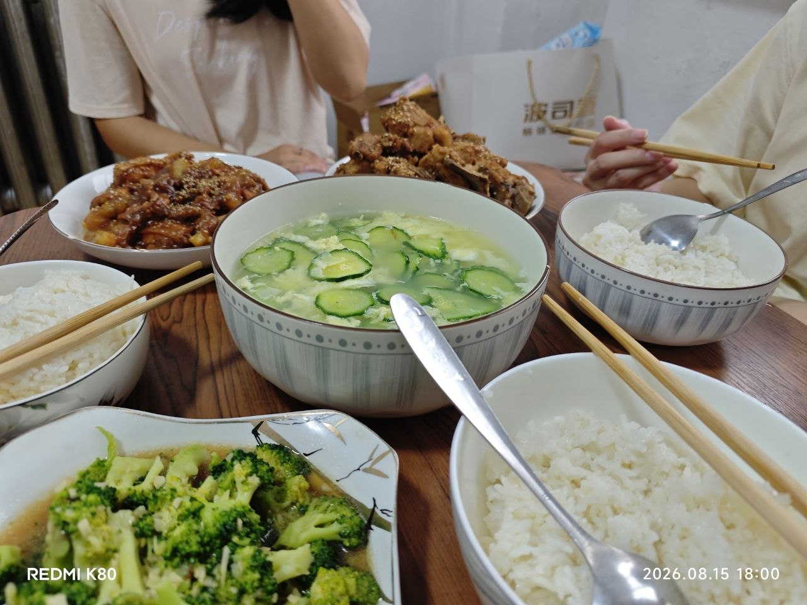
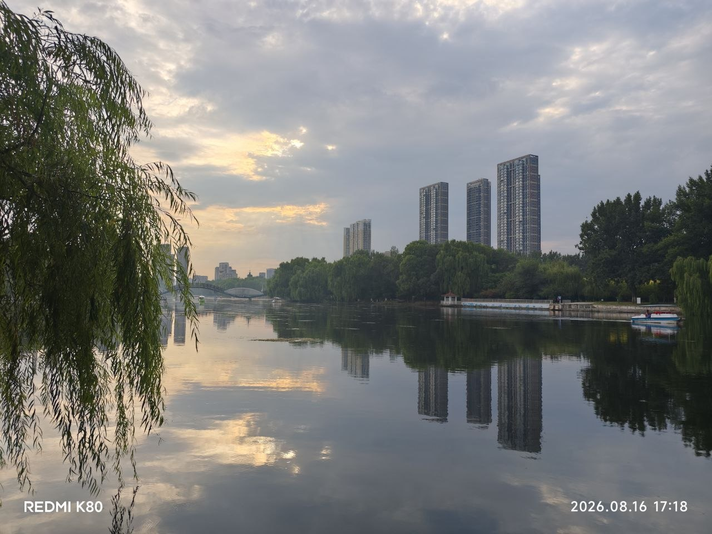

难忘的晚餐
昨天，我的朋友邀请我去她家吃晚餐，亲自下厨招待我。
我非常感动。除了我妈以外，这是第一次有一个女人愿意给我做饭吃。
说实话，我对她有超出朋友的好感，但我没有勇气说出口。
一方面，她现在正处在备考公务员的阶段，我不想在这个时候贸然打扰她、打乱她的节奏。另一方面，如果我们一直维持朋友的关系，这个时候我越雷池一步，可能是我的问题——也许对方并没有这个意向。
她的菜做得非常好，可不妨碍我觉得她很辛苦。灶台很热，现在天气还没有凉下来，做几个菜其实是汗如雨下的。但她是一个认真干练的人，不在乎这些困难，这也是我敬佩她的地方之一。
在到她家之前，我想着要趁此机会多看看她，想分辨出她状态好不好，但真正面对面的时候，我又有些害羞，很多时候不敢直接看她。好在还有第三个人，是她的妹妹，我们仨从小学、初中都算是同学，高中开始联系变少了，大学到研究生偶尔联系几次，至于为什么现在能坐到一起共度晚餐，那是另一个故事。
随着我们交流的话越来越多，我逐渐没那么害羞，多少减轻了一点我的尴尬。但有很多话我还是克制住了，没有说出口。

我想永远留在这一刻。可是美好的时间总是过得很快。我觉得我应该为她多做些事情，可我恼怒于自己做不了什么有用的事。
我怨恨命运对她不去网开一面。在我心里她是一个很有能力的人，结果现在因为这糟糕的市场环境，不得不去考公。我觉得这是上天对她的不公平。
久别重逢，我在努力重新熟悉她，但她好像没怎么变。
平心而论，这世界上没有几个人对我这么好过。也许这只是她对待朋友的方式。可如果换成是我，我只会对我最在意的人这样。
未来的事谁说得准呢？由她去吧。
梦回昨日
今天下午我和研究生阶段最重要的同学度过了一个愉快的下午，一起吃了顿晚餐。他是我研究生阶段最重要的同学，没有之一。毕业之后他在广州工作，这次是因为要回沈阳出差，正好我这时候也在沈阳，我们就一起度过了这个下午。
这已经是连续两天了。连着两天我都和对我非常重要的人共度了一个很愉快的下午。就在今晚，我突然发现——我其实难以忍受孤独。我有迫切的想摆脱孤身一人的想法，但可能还是缘分没到吧。
这个朋友对我来讲非常重要，我们在研究生阶段互相扶持。虽然最后并没有完成研究生阶段想要的目标，但毕业两年后的现在，我们各自的生活基本上都算趋于平稳了。他在广州一家国企工作，两年下来站稳了脚跟；我留在沈阳，在铁路上班。我们是同一条线的不同分叉，但我想我们最后还是殊途同归。
这次他利用出差的机会来见了我一面。我们都有一些变化，但人最本真的部分还是没怎么变。这个下午让我非常恍惚，仿佛我们又回到了研究生的某一个下午——我们在南湖公园散步，在太原街吃了自助餐。这一切好像就是两年前很普通的一天，但工作之后，这一天又变得非常珍贵。

我不是一个多愁善感的人，可这连续两天的经历让我觉得，有朋友是一件好事。这个世界还在运转，活着也挺好的。我有很多感触，可这个时候我不知道要和谁讲，只能我自己慢慢品尝。
我突然发现，我好像其实并不能忍受孤独，尤其是在有人陪伴过我之后。但如果要让我成家，除了昨天共进晚餐的那个时刻，我暂时还找不出其他的瞬间。
这种孤独感来得很快，但我希望它也能去得很快吧。